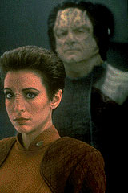

MANCHETE
DO EPISÓDIO
Alegoria
do holocausto apresenta drama
humano tocante, em clássico da série
Episódio
anterior | Próximo
episódio
Sinopse:
Data Estelar:
desconhecida.

Kira
espera encontrar justiça quando prende um possível criminoso de
guerra Cardassiano responsável por genocídio de Bajorianos em um
campo de trabalhos forçados legendário por suas atrocidades.
Ao longo da história, no entanto, a major percebe que a realidade
não é tão óbvia quanto parece ser. No fim, descobre o maior de
todos os inimigos: o preconceito.
Comentários:
"Duet" inaugurou o que se convencionou
chamar durante a série de "Clássico Deep Space
Nine", tipo de episódio que constitui a grande
contribuição em termos de identidade da série para o universo
de Jornada nas Estrelas e que simplesmente não
funcionaria em nenhum dos outros segmentos do franchise.
"Duet" é provavelmente o melhor
"episódio-temático" de Deep Space Nine
e de toda a história de Jornada. A alegoria do
holocausto se encaixa transparentemente à história de Bajor e
Cardássia, via o microcosmo de Kira e Marritza.
A atuação de Nana Visitor aqui é extraordinária, mas ainda
assim é eclipsada pela sobrenatural atuação de Harris Yulin
especialmente quando ele traz à vida, "o açougueiro de
Gallitep", Gul Darheel, com falas como "O que você
chama de genocídio, eu chamo de um dia de trabalho!".
Aqui temos de tudo: questões relevantes que ressonam com os temas
principais da série, situações que ressonam com o que
aprendemos sobre os personagens e os levam adiante em novos
caminhos de uma trama complexa, que nunca fica na frente dos
personagens, e que nos força a tentar advinhar "o que"
e "por que" até quase a última cena.
A direção de Conway é magistral em oferecer atmosfera e
andamento na medida certa do que é pedido pelo episódio.
Citações
Kira - "If your lies are
going to this transparent, this is going to be a very short
interrogation."
("Se suas
mentiras irão ser assim tão transparentes, este vai ser um curto
interrogatório!")
Marritza - "Then I'll try to make my lies more
opaque..."
("Neste caso, tentarei fazer minhas mentiras mais
opacas.")
Marritza - "What you call genocide, I call a day's
work."
("O que você chama de genocídio, eu chamo de um
dia de trabalho.")
Marritza - "You can never undo what I've accomplished -- the
dead will still be dead!"
("Você nunca poderá desfazer o que eu realizei ...
os mortos continuarão mortos.")
Kainon - "He's Cardassian. That's reason enough."
("Ele é um Cardassiano. Isto é razão
suficiente")
Kira - "No... It's not..."
("Não... Não é...")
Trivia:
 Episódio contou com a presença de Gul Dukat e da alferes
Bajoriana Neela.
Episódio contou com a presença de Gul Dukat e da alferes
Bajoriana Neela.
"Duet" foi claramente um episódio econômico, um
dos mais baratos da temporada, provando que não é necessário
gastar muito para se fazer uma obra-prima.
Ficha
técnica:
História de Lisa Rich &
Jeanne Carrigan-Fauci
Roteiro de Peter Allan Fields
Direção de James L. Conway
Exibido em 14/06/1993
Produção: 019
Elenco:
Avery Brooks como
Benjamin Lafayette Sisko
René Auberjonois como Odo
Nana Visitor como Kira Nerys
Colm Meaney como Miles Edward O'Brien
Siddig El Fadil como Julian Subatoi Bashir
Armin Shimerman como Quark
Terry Farrell como Jadzia Dax
Cirroc Lofton como Jake Sisko
Elenco convidado:
Marc Alaimo como Gul Dukat
Robin Cristopher como alferes Neela
Norman Large como "o capitão"
Tony Rizzoli como Kainon
Ted Sorel como Kaval
Harris Yulin como Aamin Marritza